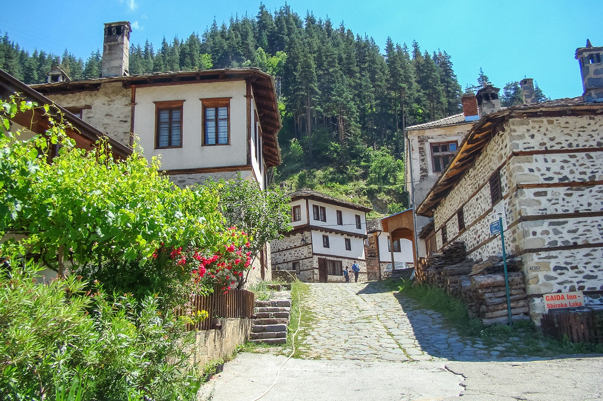
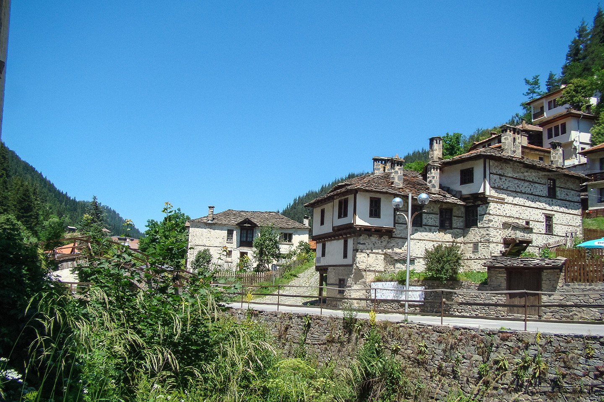
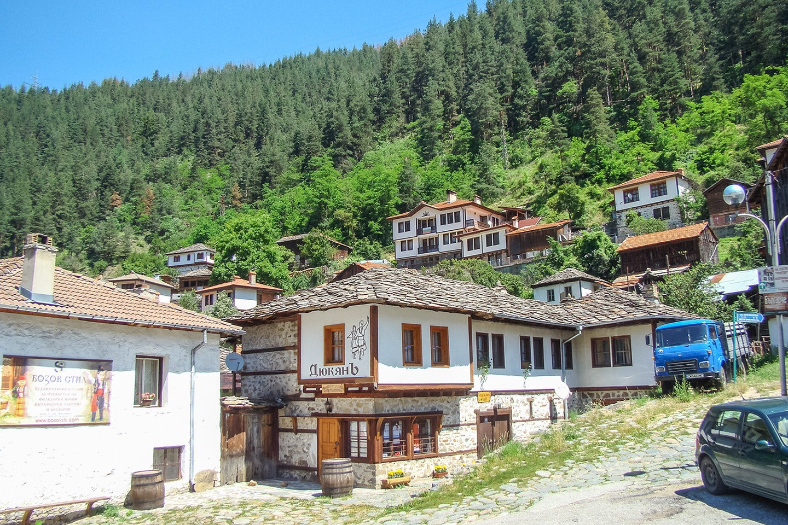

Широка лъка
Широка лъка е село в Южна България. Намира в община Смолян (23 км северозападно), Област Смолян, на 16 км и на 5 км съответно от Пампорово и с. Стойките и на 22 км югоизточно от Девин. Обявено е за архитектурен и фолклорен резерват. Селото е получило името си от старобългарската дума „лъка“, означаваща 'извивка, кривина, лъкатушене'. Широка лъка е известна със своите автентични родопски къщи, като Згуровската, Учиковската и Григоровската къщи. Една от местните забележителности е построената (според преданието издигната само за 38 дена) през 1834 г. църква „Св. Богородица“. Иконостасът на църквата е уникален по своя стил. Предполага се, че е рисуван от ученици на братята Димитър и Захари Зограф от Самоков. Съществува и хипотезата, че самите те да са изографисали църквата. В близост до църквата се намира старото училище, построено през 1835 г. Освен със забележителната си архитектура, Широка лъка е известна и с песните си, които са съпроводени от каба гайда. Широка Лъка е от селата, в които се е родила и се развива родопската песен. Много от най- известните певци и гайдари на родопския фолклор са родени тук. Доказателство за това е създаденото през 1972 г. Средно музикално училище за народни песни и инструменти.



